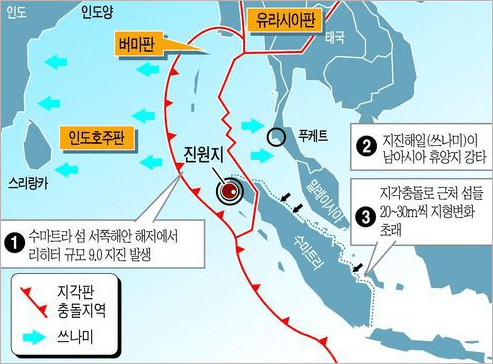

해저에서 화산폭발, 지진, 지반의 함몰 등의 지각변동, 빙하의 붕괴, 핵실험에 의해 발생한 지진해일로 해수면이 상승, 육지로 유입되어 인명 및 재산 피해를 유발하는 재해를 지진해일이라고 한다.
지진해일주의보 발령기준
한반도 주변해역(21N~45N, 110E~145E)등에서 규모 7.0 이상의 해저지진이 발생하여 우리날 해안가에 해일파고 0.5~1.0m 미만의 지진해일 내습이 예상될 때
지진해일경보 발령기준
한반도 주변해역(21N~45N, 110E~145E)등에서 규모 7.0 이상의 해저지진이 발생하여 우리나라 해안가에 해일파고 1.0m 이상의 지진해일 내습이 예상될 때
지진해일 국내외 피해
국내
1983년 5월 26일 일본 아키다현 서쪽 해역에서 발생한 규모 7.7(일본기상청 발표 규모)의 지진으로 일본은 물론 우리나라와 러시아를 포함한 동해상에 큰 지진해일이 발생하였다.
이 지진해일로 인해 일본에서는 지진해일의 해일고가 15m까지 기록되었으며, 러시아에서는 5m, 우리나라 동해안의 임원에서는 3.1m의 해일고를 기록하였다.
이 지진해일은 5명(사망 1명, 실종 2명, 부상 2명)의 인명피해와 선박 피해 81척(전파 47척, 반파 34척), 건물 및 시설피해 등 총 3억 7천여만 원의 재산피해를 발생시켰다.
이 지진해일은 지진이 발생한 후 77분 만에 울릉도에, 112분 후에는 포항에 도달하였다.
1993년 7월 12일에는 일본 홋카이도 오쿠시리섬 북서해역에서 발생한 규모 7.8(일본기상청 발표 규모)의 지진으로 지진해일이 발생하여 우리나라 동해안에 피해를 입혔다.
이 지진해일은 일본 오쿠시리섬의 서쪽 해안에 위치한 모나이 지역에서 31.7m라는 높은 해일고를 기록하였다. 한편 우리나라 동해안에는 1.0～2.5m의 해일고를 기록하였다.
이 지진해일로 인하여 우리나라에서는 인명피해는 발생하지 않았으나, 약 3억 9천여만 원의 재산피해가 발생하였다.
남아시아 지진해일

< 남아시아 지진해일 발생 및 진행 >
발생시간 : 2004. 12. 26 07:58:53(현지시각)
진앙 : 인도네시아 수마트라섬 북서부 해안(3.307°N, 95.947°E)
규모 : 9.0
진원깊이 : 약 30㎞
지진특성
세계적으로 1900년 이후로 발생한 지진 중 네 번째로 큰 지진이며
1964년의 알래스카 지진이후로는 가장 큰 지진으로써
이번 지진으로 발생한 지진해일로는 역사상 가장 큰 인명피해가 발생함
피해상황
사망자 : 인도네시아 등 12개국에서 약 283천명 발생
이재민 : 약 180만명
경제적 손실 약 136억 달러
※ 우리나라 국민 32명 피해발생(사망 20명, 실종 12명)
지진해일 대처요령
현재 과학기술로는 지진발생을 예측할 수 없지만, 지진해일에 대해서는 해일 도착시간을 예측할 수 있다. 가령 지진이 동해 북동부 해역(일본 북서근해)에서 발생할 경우 이로 인한 지진해일은 약 1시간 30분 후에 동해안에 도달한다. 따라서 지진해일은 예·경보 발령에 따라 높은 곳으로 신속히 대피함으로써 피해를 줄일 수 있다.
해안에서 강한 지진동을 느꼈을 경우에는 가까운 해역에서 지진해일 발생이 우려되는 상황이다. 이 경우에는 해안은 물론 바닷가 낮은 지역까지 위험하므로 즉시 높은 지대로 대피해야 한다. 지진해일은 제1파가 지나갔다고 해도 제2파, 제3파의 해일이 내습할 수 있으므로 성급히 저지대로 내려오지 말고 고지대의 안전한 장소에서 휴대폰이나 라디오로 현재 상황을 지속적으로 파악하여야 하며, 지진해일 특보가 해제되고 안전하다고 판명되기 전까지는 대피해 있어야 한다.
지진해일 발생 시 먼바다에서 조업 중인 선박은 지진해일경보가 해제될 때까지 항구 밖에서 대기하여야 하며, 시간적 여유가 있을 경우에 항구 내의 선박도 먼바다로 대피하는 것이 상대적으로 안전하다.
지진해일이 내습하면 항만에서는 파고가 높아지고 유속이 급격하게 증가하므로 선박의 안전에 각별히 주의하여야 한다.